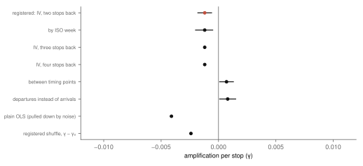
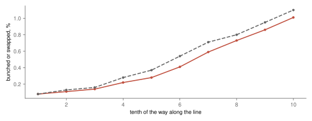
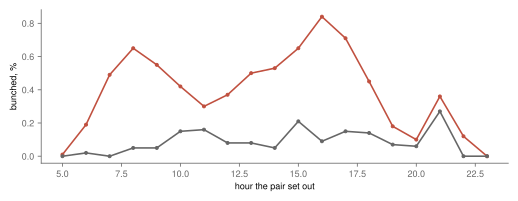
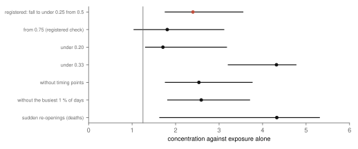
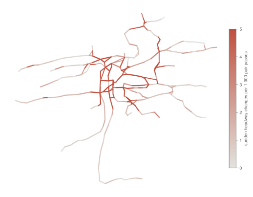

Research · Running late, part 2 · Prague trams and buses, spring and summer 2025
Why do three 22s come at once? Tram bunching in Prague, 2025
A pre-specified analysis of the spacing between consecutive trams of the same line finds that it drifts stop by stop without feeding on itself: bunches build slowly towards the end of a line, as independent drift would build them, and the few sudden closings cluster where the spacing is volatile.
- amplification per stop
- −0.0012 95 % confidence interval (CI) −0.0018 to −0.0006 · the prediction of amplification is not supported
- pairs of trams followed
- 243 465 6.0 million stops passed in pairs, 15 March – 8 September 2025
- pair passes arriving bunched
- 0.43 % under a quarter of the planned gap apart; 1.3 % of pairs are bunched somewhere
- sudden closings, hottest tenth of platforms
- 2.40× exposure alone; CI 1.76 to 3.55 · supported, on 508 closings at the ranked platforms (510 in all); 1.72× without line 9
Overwhelmed? Here's the short version
- Two trams of the same line leave the terminus a few minutes apart and drift apart and together on the way. Followed over 243 465 such pairs in 2025, the drift does not feed on itself: a pair that is off schedule at one stop is no more likely, if anything slightly less, to go further off at the next (an amplification of −0.0012 per stop, 95 % CI −0.0018 to −0.0006). The prediction of amplification is not supported.
- Bunches still build towards the end of the line, from 0.1 % of pair passes near the start to 1.0 % near the end, no faster than independent drift builds them: shuffling each tram's stop-to-stop changes between pairs gives 1.1 % at the end. That comparison counts trams that swap order as bunched, a choice made after the results; counted as registered, without swaps, the end of the line is 1.0 % observed against 0.74 % shuffled.
- Without the 65 stops where trams stand much longer than usual, where dispatchers probably hold them, the estimate is slightly positive (+0.0007, +0.0001 to +0.0013); the pull below zero is therefore probably at those stops, a reading formed after the results.
- Bunching is rare: 0.43 % of pair passes arrive under a quarter of the planned gap apart, and 76 % of bunches form gradually. The sudden closings the design defined, 510 of them, concentrate on some platforms (2.40× exposure, supported), but 30 % of them are on line 9, and without it the ratio is 1.72 with an interval reaching down to 1.00. Where the spacing suddenly closes it also suddenly reopens. The stability of the places is labelled not supported by the registered rule, but there are too few events to tell.
- City buses differ: their spacing does amplify, slightly (+0.0021 per stop, the prediction supported).
- Sudden closings are more frequent on segments where part 1 found the delay gain most spread out (0.19, supported by the rule, but largely built in).
Photo: Dezidor · CC BY 3.0, toned

Anyone who has waited ten minutes for a tram and then watched two of the same line arrive together knows bunching. The usual account of it comes from buses: a vehicle that falls a little behind finds more people waiting at each stop, takes longer to load them and falls further behind, while the one following finds fewer and catches up, until the two travel together78. On that account the spacing between two vehicles is unstable: a small deviation grows by itself. Part 1 of this series found where Prague's trams record their delay. This part asks what happens to the spacing between two trams of the same line as they travel, and whether it breaks down by itself.
The question
A pair here is two trams of the same line and route that follow each other, scheduled between four and fifteen minutes apart, the frequent service people use without a timetable. Their spacing at a stop is the gap between their arrivals divided by the gap the timetable plans there, so 1 means on plan, 0.5 means half the planned gap, and anything under 0.25 counts as bunched. The pair is followed from the first stop where the two trams are consecutive to the end of the line, or until a third tram of the line comes between them. Convoys of three are therefore not analysed, and line 22 is not singled out; the title is the question people ask, and the answer here is about pairs.
Three questions were written down before any spacing was computed. First, amplification: does a pair that is off plan at one stop move further off at the next? Second, places: do sudden closings, a pair going from at least half the planned gap to under a quarter of it in one stop, happen more often at some platforms than their traffic alone would give, and are those platforms the same in odd and even weeks? Third, whether the closings follow the segments where part 1 found the delay gain most spread out. Each question has its own rule. A question is "supported" if its 95 % interval lies wholly on the predicted side of its line. For amplification it is "not supported" if the 90 % interval lies wholly within ±0.01 per stop; for the places, their stability and the link to part 1, if the interval lies wholly on the other side of its line or, for the link, wholly within ±0.10. Anything else is "inconclusive".
Data
The trams are those of the author's thesis: Prague Integrated Transport's stop-time history from Golemio2, 15 March to 8 September 20251, with the screening of the earlier studies for planned closures and gaps in the feed. A trip counts if it runs its line's usual sequence of stops, which 63–76 % of trips do each month; short turns and diversions are left out. The first and last stop of each line are left out too, because the timetable sets the departure there. Route variants, a line in one direction with its end stops, with fewer than 1 000 pairs over the season, 505 of them, mostly rare variants, are left out, which leaves 64 variants and 243 465 pairs. The arrivals of a pair share an arrival second in 0.0 % of stops, and they look measured rather than copied from the timetable: only a fraction of a percent equal it to the second.
No amplification
The measure of amplification is how much a pair's spacing changes from one stop to the next per unit it is off plan at the first. Measured directly, noise in the arrival times pulls it below zero by itself: an arrival recorded a few seconds late makes the spacing look off at one stop and corrected at the next. The design first proposed to remove that by comparing with shuffled data, but tests on made-up data before the results showed that the shuffle also removes the noise it was meant to keep, so the registered estimate was changed, before any spacing was read, to an instrumental-variable one: the spacing two stops back stands in for the spacing one stop back, and shares none of its recording noise if that noise is not carried from stop to stop4. The data support this: the autocorrelations of the changes at two and three stops are 0.000 and −0.001. The spacing at the two stops is almost perfectly related (0.995), so the instrument is strong.
Over 5.3 million steps from one stop to the next, the amplification is −0.0012 per stop (95 % CI −0.0018 to −0.0006). The margin set in advance for "no amplification" was ±0.01 per stop, and the 90 % interval, −0.0017 to −0.0006, lies wholly within it, so the prediction of amplification is not supported. The interval also lies wholly below zero, which the design lists under "inconclusive"; both rules apply, the more specific margin rule was applied as coded, and the label is best read as no amplification, with a small negative value. With the spacing three or four stops back as the instrument the estimate is −0.0012 and −0.0012; resampled by week its interval is −0.0020 to −0.0005. Measured plainly, without the instrument, it would be −0.0041, and the design's original shuffled comparison −0.0024: both further from zero mainly because of the recording noise (fig. 1).
The small negative value is not uniform. Without the 65 stops where trams stand much longer than the network's usual half-minute, or are planned with a pause of a minute or more, the estimate is +0.0007 (+0.0001 to +0.0013), wholly above zero: about a tenth of the registered margin at most. Variants do not relabel the primary result, but this one would read as "supported" had it been primary. Dropping those stops also drops every step whose chain touches them. Using departures instead of arrivals, where both trams' departures are recorded (about 50 % of stops), it is +0.0008. A reading consistent with these, formed after the results: that holding trams at those stops pulls the spacing back, and that between them it drifts with a very slight tendency to grow. That stops with long dwell are where dispatchers hold trams is an inference from dwell, not a documented fact.
Every estimate of amplification lies within a few thousandths of zero.

Bunches build slowly, towards the end
Trams leave the terminus close to plan, and the spacing spreads as they go: its variance grows from 0.007 in the first tenth of a line to 0.075 in the last, steadily, as independent changes would make it grow. The share of pair passes arriving bunched or swapped grows with it, from 0.1 % near the start to 1.0 % near the end (fig. 2). Shuffling each tram's stop-to-stop changes between pairs of the same route, hour and day, which keeps the size of the changes and removes any link between them, gives the same curve or slightly more (1.1 % in the last tenth). Swaps are counted with bunches in this comparison because the shuffle lets trams pass each other, which on rails they hardly ever do; this pooling was chosen after the results, and compared as registered, without swaps, the observed last tenth is 1.0 % against 0.74 % shuffled, with 0.38 % more swapped in the shuffle. Over the whole line, 0.43 % of pair passes arrive under a quarter of the planned gap apart and 0.60 % more than 1.75 times it; with the looser and more common cut-offs of half and one and a half times the planned gap, 1.8 % and 1.6 %. Spacing relative to the planned headway is a common reliability measure9.
Bunching grows along the line, about as fast as independent drift would make it.

Most bunches form slowly. Of the 3 170 pairs that are bunched at some stop, 1.3 % of all pairs, 76 % arrive there from a spacing between a quarter and a half of the planned gap, closing a little at a time; 16 % arrive from at least half of it in one stop. Once bunched, a pair tends to stay so: 87 % of bunched pairs are still bunched at the next stop. These counts were made after the results.
Bunching follows the day. On weekdays it is highest in the afternoon peak and lowest late at night (fig. 3).
Pairs bunch most in the weekday afternoon peak.

Sudden closings, and where they happen
The design defined the birth of a bunch as a sudden closing: a pair going from at least half the planned gap to under a quarter of it between two stops. That turned out to be rare, 510 in 5.5 million steps, and to miss most bunches, which close gradually. The question about places is therefore about sudden closings, not about bunching in general.
Platforms were ranked by their rate of sudden closings in odd weeks, and the tenth with the highest rates held 18.6 % of the even-week closings, and the other way round; if closings fell anywhere with equal chance per pair passing, that tenth would hold 7.7 %. The ratio is 2.40 (95 % CI 1.76 to 3.55), above the registered 1.25, so concentration is supported, on 508 closings at the ranked platforms (510 in all). It depends on the rule: with the stricter rule registered as a check, a fall from at least three quarters of the gap, the ratio is 1.81, with an interval reaching down to 1.04 (inconclusive); counting closings to under a fifth of the gap it is 1.71, to under a third 4.32 (fig. 4). It also depends on one line. Line 9 has 30 % of the closings on 15 % of the pairs passing, and without it the ratio is 1.72 (95 % CI 1.00 to 2.38), no longer wholly above 1.25. The platform ranking is partly a line effect; stops shared by several lines, which the design said it could not separate, would show up like this too. These two numbers were computed after the results.
Whether the same platforms stand out in odd and in even weeks could not be told. The split-half correlation is 0.18 (0.10 to 0.23), below the registered 0.50, which makes the stability question not supported by the rule, although a split-half correlation understates the full-sample one56. With about one closing per platform over the season, and none at 55 % of them, the registered bar of 0.50 was out of reach: in a simulation on the real exposures, with a fixed hottest tenth of platforms whose closing rate is five times the rest, the expected split-half correlation is 0.17, and with ten times it is 0.29, while the observed value is 0.18. The data are as consistent with stable hotspots as with none. With the looser rule of closing under a third of the gap (1 187 closings) the correlation is 0.32. The simulation was run after the results.
The platforms that stand out look volatile rather than like bunch factories. Sudden re-openings, the reverse event, concentrate in the same way (4.33× exposure, 95 % CI 1.63 to 5.31, on only 72 events), and across platforms the share of steps where the spacing suddenly closes and the share where it suddenly opens are strongly related (0.91); the rate of sudden closings follows the share of large steps of either sign (0.42). These relations were computed after the results. Fig. 5 maps how often the spacing changes suddenly on each segment. The platform with the most closings is Národní divadlo, 21 against about 2.1 expected from its traffic; the segment with the most is Újezd → Národní divadlo (17), then Kněžská luka → Chmelnice (12). Of the eight platforms with most closings, 2 are among the 65 stops with long dwell. A comparison the design registered, running the closings backwards along the line, uses the same events as the re-openings and so adds no separate test; its ranking agrees with the forward one only weakly (0.15), as so few events allow.
Sudden closings concentrate on some platforms, and so do sudden re-openings.


Sudden closings are also more frequent on segments where part 1 found the delay gain most spread out across passes: across 560 segments, keyed by their stop names, the rank correlation is 0.19 (0.14 to 0.22), so the link is supported by the rule. It is largely built in, since a closing is a large difference between two trams' gains on one segment and the spread of gains measures the same thing; with the mean gain instead of its spread the correlation is 0.08. The interval resamples days only, and a stop name can join several platforms, so it is narrower than it should be.
Buses
City buses, routes 100 to 299, analysed alongside with their own labels, do not behave like trams. Over 890 133 pairs their amplification is +0.0021 per stop (+0.0013 to +0.0028), wholly above zero, so for buses the prediction of amplification is supported: a bus off its spacing tends to move further off at the next stop. With the instrument two, three and four stops back it is +0.0021, +0.0027 and +0.0030, and the autocorrelation of the changes at one stop is −0.019, so the result does not rest on one lag. The effect is small, about a fifth of a percent per stop, some 6 % over thirty stops, but it has the sign the textbook account predicts78. 0.64 % of their pair passes arrive bunched, and the order of two buses swaps in 0.14 % of passes, which may be buses passing each other or arrivals matched wrongly. Their 952 sudden closings concentrate strongly on some stops (8.63× exposure, 7.51 to 9.14, supported); bus pairs are noisier, since stops are shared by many lines and routes branch, which the design said in advance. Whether those stops are stable is inconclusive: the split-half correlation is 0.48, and its point estimate lies at the top of its own interval, so it should not be read as the centre. Why buses differ was not measured; they share the road with cars and can pass each other, and the timing-point rule marks only 10 bus stops, against 65 of 624 tram stops.
What this means
On Prague's trams in 2025, the spacing between two trams of a line did not break down by itself. It drifted stop by stop, perhaps slightly outwards between the stops where trams are held and back again at them (a reading formed after the results), and bunches built up slowly towards the ends of lines, about as fast as independent drift would build them. The textbook mechanism of a late vehicle falling ever further behind was not visible in the stop-to-stop changes of trams; for buses it was visible, slightly. Where the spacing suddenly closes it also suddenly opens, and much of the concentration is one line: those places are volatile, which the data locate but do not explain.
What this does not show
The amplification is a net figure. Trams are timetabled and dispatchers hold them at some stops, so a value near zero means that whatever feeds bunching and whatever corrects it cancel out here, not that nothing feeds it. The pairs are two trams of one line scheduled four to fifteen minutes apart, formed near the start of the line; passengers on a stop shared by several lines see a combined spacing this does not measure, and convoys of three are not analysed. 160 pairs scheduled three to four minutes apart were too few to say anything. The sudden closings are located, not explained; incidents, junctions and stops shared by several lines look alike here. The descriptions of how bunches form, of the platforms' volatility, of line 9 and of the power of the stability test were made after the results. Spacing between trams is not passengers' waiting time, and one spring and summer is not every season.
Reproduction
Every number on this page is filled in from the result files by a script, from the repository root:
- The rain study's screening of closures and feed gaps: Does rain delay Prague's trams?, Reproduction.
tools/bunch/screen.py: routes, pairs and the screening counts;timing.py: the timing points.estimate.py, checked bytest_bunch.py: the registered estimates and checks.describe.pyanddescribe_bus.py: the descriptions computed after the results.article.py: the map, the figures and this page.
The design is docs/research/bunching-design.md.
References
- Šandová, B. (2026). Persistence Dynamics and Welfare Costs of Urban Public Transport Delays. Master's thesis, Institute of Economic Studies, Faculty of Social Sciences, Charles University, Prague. Summary at bsandova.com/texts/thesis. Not yet in a public repository.
- Operátor ICT. Golemio, Prague's open-data platform: Prague Integrated Transport stop-time history, collected 15 March – 8 September 2025. golemio.cz. Accessed 8 October 2026.
- ROPID. Prague Integrated Transport open data: timetable in GTFS (stops, trips and routes). pid.cz/o-systemu/opendata. Accessed 8 October 2026.
- Anderson, T. W., Hsiao, C. (1981). Estimation of dynamic models with error components. Journal of the American Statistical Association 76(375), 598–606. doi:10.1080/01621459.1981.10477691. Accessed 8 October 2026.
- Spearman, C. (1910). Correlation calculated from faulty data. British Journal of Psychology 3(3), 271–295. doi:10.1111/j.2044-8295.1910.tb00206.x. Accessed 8 October 2026.
- Brown, W. (1910). Some experimental results in the correlation of mental abilities. British Journal of Psychology 3(3), 296–322. doi:10.1111/j.2044-8295.1910.tb00207.x. Accessed 8 October 2026.
- Daganzo, C. F. (2009). A headway-based approach to eliminate bus bunching: systematic analysis and comparisons. Transportation Research Part B: Methodological 43(10), 913–921. doi:10.1016/j.trb.2009.04.002. Accessed 8 October 2026.
- Bartholdi, J. J., Eisenstein, D. D. (2012). A self-coördinating bus route to resist bus bunching. Transportation Research Part B: Methodological 46(4), 481–491. doi:10.1016/j.trb.2011.11.001. Accessed 8 October 2026.
- Kittelson & Associates, Parsons Brinckerhoff, KFH Group et al. (2013). Transit Capacity and Quality of Service Manual, 3rd edition. TCRP Report 165. Transportation Research Board. doi:10.17226/24766. Accessed 8 October 2026.